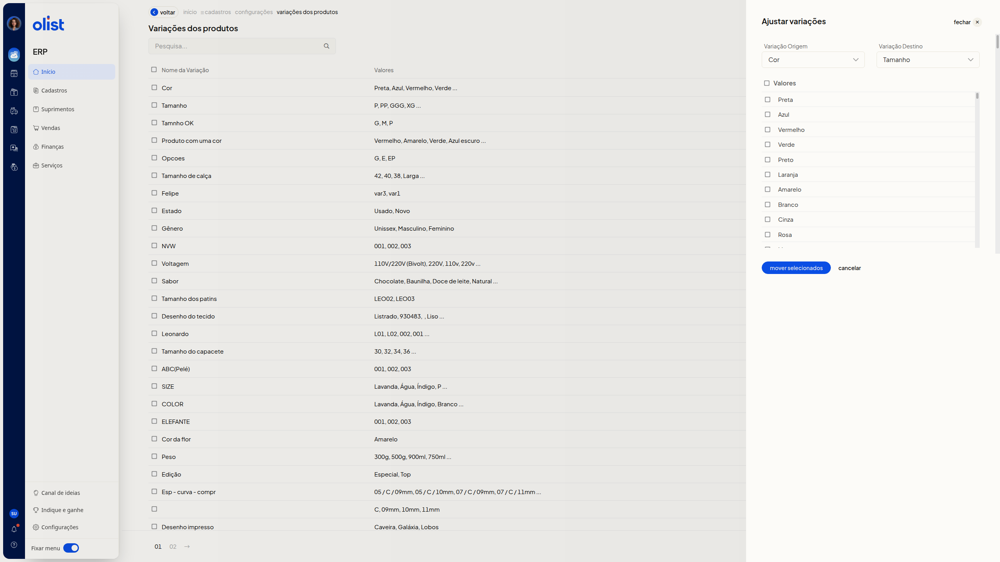

Como ajustar variações de produtos
Descrição
No ERP da Olist, você move valores de uma variação de produto para outra. A página Variações dos produtos lista as variações cadastradas e oferece essa opção.
Acesse Início > Cadastros > Configurações > Variações dos produtos.
Pré-requisitos
Esteja autenticado no ERP. A página Variações dos produtos lista as variações cadastradas.
Instruções
-
Acesse Início > Cadastros > Configurações > Variações dos produtos.
-
Clique em Ajustar variações. Os campos Variação Origem, Variação Destino e Valores não são obrigatórios.
-
Escolha, em Variação Origem, a variação de onde os valores saem. A lista reúne as variações já cadastradas.
-
Escolha, em Variação Destino, a variação que receberá os valores.
-
Marque, em Valores, os valores da origem que devem ser movidos.
-
Clique em mover selecionados para mover os valores marcados. cancelar fecha o painel e volta à lista.

Links relacionados
Se precisar de ajuda, fale com o suporte.